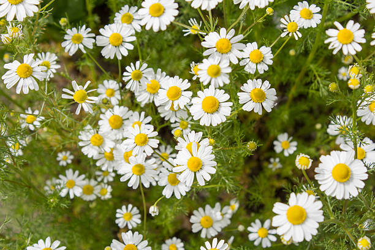

Manzanilla
Propiedades: Ayuda a aliviar problemas digestivos y reduce el estrés.
Descubre las propiedades y usos tradicionales de las plantas medicinales.
Propiedades: Ayuda a aliviar problemas digestivos y reduce el estrés.
Propiedades: Alivia dolores de cabeza y mejora la digestión.

Propiedades: Ideal para hidratar y reparar la piel dañada.

Propiedades: Ayuda a reducir la inflamación y fortalece el sistema inmune.